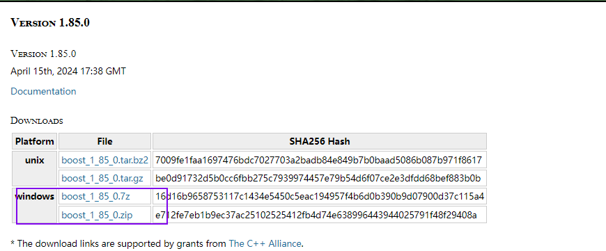
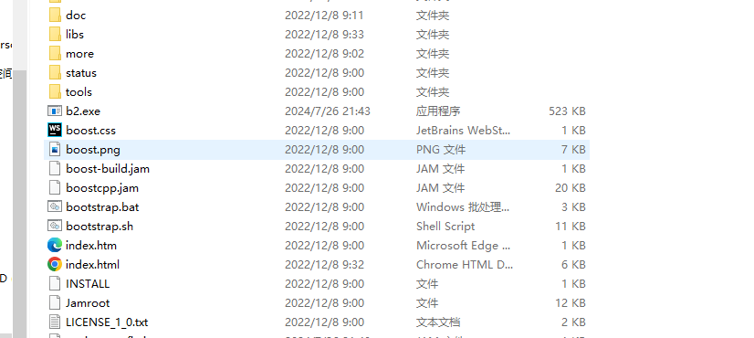
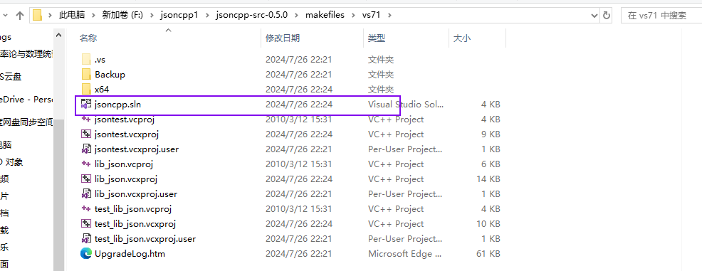
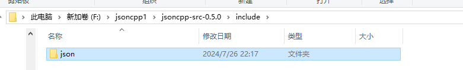

c++的boost库和相关的json数据解析库¶
我主要是学习了如何安装boost库，可以去boost官网去下载，下载地址为：
首先进入官网下载对应的boost库文件，点击主页面的download按钮即可进行下载，

然后点击进入相关下载页面，

之后就是直接进行相关下载。
下载完毕后，进行相关的解压和编译。¶
在这一步可能会没有b2.exe。

但是我们可以先双击boosttrap.bat这个可执行脚本文件。
之后就会生成b2.exe。
然后在这个目录下进入windows的powershell界面。
执行相关的编译命令，然后就可以直接进行编译了。
等待编译完成即可。
编译完成后¶
在vs2019，新建一个控制台项目，在控制台项目中，将项目属性的包含目录和库目录分别进行编辑添加，然后自行在网络上找一个，或者ai生成一个简单的测试样例，进行测试，注意你可以自行选择编译x86,x64等版本。
测试无误之后就可以使用boost库了。
编译jsoncpp库¶
选择windows版本的下载。
之后进行解压，执行相关的sln文件。

如果出现需要升级直接进行升级即可。
之后就等待，然后进入相关的vs2019，直接进行lib_json的重新生成，注意要自行选择x86,x64版本的debug,release进行生成。
之后就算生成成功了。
项目属性配置测试¶
在项目属性中，vc++包含目录设置为

然后将刚生成的两个静态库复制到单独文件夹，将库目录进行编写选择即可。
之后进行相关的代码测试，一样的，可以直接让ai生成一段即可。
为了测试JSONCPP库是否已正确安装在你的C++环境中，你可以编写一个简单的C++程序，该程序使用JSONCPP来解析一个JSON字符串，并打印出其中的一些内容。以下是一个简单的示例代码，用于演示如何做到这一点：
首先，确保你已经按照JSONCPP库的说明文档安装了库，并且在编译你的程序时链接了JSONCPP库。
接下来是示例代码：
cpp
#include <iostream>
#include <json/json.h> // 引入JSONCPP的头文件
int main() {
// 定义一个JSON字符串
std::string err;
std::string json_str = R"({"name": "John Doe", "age": 30, "city": "New York"})";
// 解析JSON字符串
Json::Reader reader;
Json::Value root;
bool parsingSuccessful = reader.parse(json_str, root, false, err);
if (!parsingSuccessful) {
std::cerr << "Failed to parse JSON string: " << err << std::endl;
return 1;
}
// 访问并打印JSON数据
std::string name = root["name"].asString();
int age = root["age"].asInt();
std::string city = root["city"].asString();
std::cout << "Name: " << name << std::endl;
std::cout << "Age: " << age << std::endl;
std::cout << "City: " << city << std::endl;
return 0;
}
请注意，这个示例使用了C++11的原始字符串字面量（R"(...)"）来避免在JSON字符串中使用转义字符。如果你使用的是不支持C++11或更高版本的编译器，你需要将JSON字符串中的双引号替换为转义的双引号（\"）。
要编译这个程序，你需要将JSONCPP库包含在你的编译器的包含路径（include path）中，并确保链接器可以找到JSONCPP的库文件。编译命令的具体形式将取决于你的操作系统、编译器以及JSONCPP的安装方式。
例如，如果你使用的是g++编译器和Linux系统，并且JSONCPP库已经安装在标准位置，你的编译命令可能看起来像这样：
这个命令会编译test_jsoncpp.cpp（你的源代码文件名），链接JSONCPP库，并生成一个名为test_jsoncpp的可执行文件。运行这个可执行文件将打印出解析的JSON数据。
如果你看到输出中包含Name: John Doe、Age: 30和City: New York，那么恭喜你，JSONCPP库已经成功安装并可以在你的C++项目中使用了！